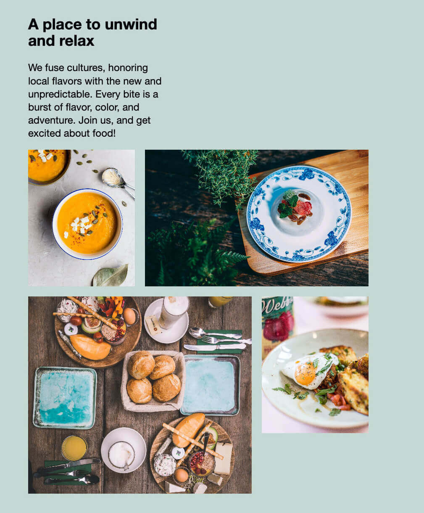
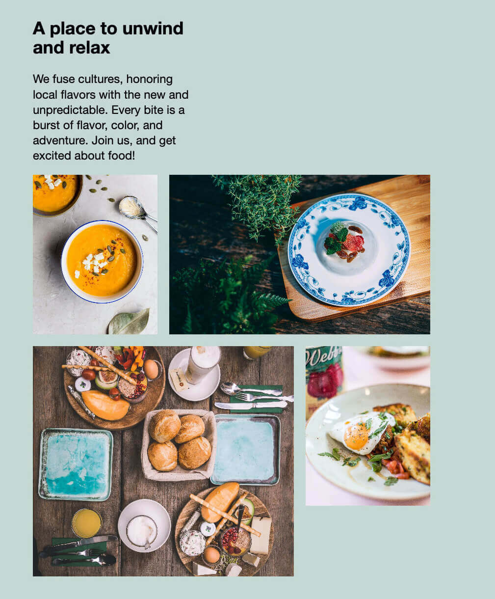

Inspired by Hrvoje Grubisic. Modern restaurant is a non-commercial study on modern website design.
Modern Restaurant is easy breezy fine dining. The food is beautiful; the weather is beautiful; the space is beautiful. You just want to stay the whole afternoon and enjoy the view while talking to your friends.
This effortless serenity is captured in their website, with a soft muted color palette and relaxed layout. We showcase the cuisine’s vibrant freshness. It’s a website for an airy, relaxed visit.
Show me the modern restaurant website.
 

“photo of pub set in room during daytime” by Jason Leung
“two sauces topped with seeds” by chuttersnap
“flat-lay photography of desert food on plate” by Chinh Le Duc
“assorted-variant of food on plate and tray” by Marvin Binnig
“shallow focus photography of sunny-side up egg” by Charisse Kenion